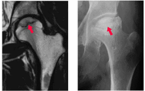
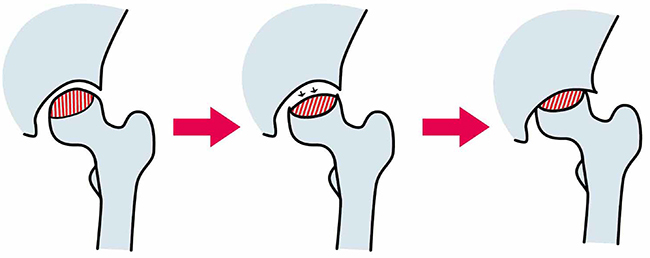
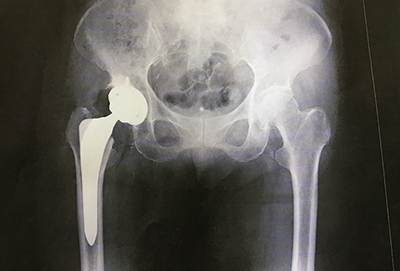

大腿骨頭壊死
大腿骨頭壊死とは
大腿骨頭壊死とは、太腿を支える大きな骨（大腿骨）のうち、足の付け根側の股関節にはまっている部分（大腿骨頭）に血が通わなくなり、骨の組織が壊死してしまう股関節の病気です。
30〜50歳代と比較的若い方に多くみられます。
骨の壊死だけでは症状はなく、初期の場合はレントゲン写真などではわからないこともあるため見逃されている例も少なくなく、壊死した骨が体重で押しつぶされて崩れ、大腿骨頭がつぶれてしまった時に突然痛みが現れ気付くケースが多いです。

症状
足の付け根（股関節）の痛み
歩行時の跛行
原因
大腿骨頭壊死は、大腿骨頭に十分な血液が流れず、血が通わなくなって壊死することで起こります。
なぜ骨の一部が壊死するのか、その原因ははっきりしないことがほとんどです。
原因のはっきりしない大腿骨頭壊死を「特発性大腿骨頭壊死」と言います。
お酒をたくさん飲む方（日本酒換算で2合/日以上）や、ステロイドのお薬を飲んでいる方（プレドニゾロン換算で15mg/日以上）に多いとされています。
特発性大腿骨頭壊死は厚生労働省が指定する特定疾患となっており、医療費などの補助を受けることができます。
特発性以外の原因としては、脱臼や骨折などの外傷、ダイバーが潜水後に発症する減圧病などがあります。

診断
大腿骨頭壊死を診断するための主な検査は、レントゲンとMRI検査です。
早期の場合はレントゲン写真だと診断がつかないことが多いため、少しでも疑いがあればMRI検査を行います。
他の部位にも壊死がないか確認する目的で、骨シンチグラフィーを行うことがあります。
治療
大腿骨頭壊死の治療は、保存療法と手術療法に分けられます。
保存療法とは、手術以外の治療法のことです。
これ以上骨の破壊が進まないよう、体重管理や杖による負荷の軽減、長時間の歩行や重いものを持つことを避けるなどの生活指導を行います。
痛みに対しては、消炎鎮痛剤（痛み止め）を使用します。
骨の変形が早い場合や症状が強い場合は、手術を行います。
手術の方法には、自分の骨や関節を残す「骨切り術」と、股関節そのものを人工のものと取り替える「人工関節置換術」があります。
若年者を中心に基本的には骨切り術を第一選択とすることが多く、骨が壊死した範囲が大きい場合や骨が大きく壊れてしまった場合、また高齢者の場合は人工関節置換術を選択することが多いです。

参考文献
https://www.joa.or.jp/public/sick/condition/femur_head_necrosis.html
https://www.joa.or.jp/public/publication/pdf/joa_017.pdf
https://www.mhlw.go.jp/file/06-Seisakujouhou-10900000-Kenkoukyoku/0000089951.pdf
https://www.mhlw.go.jp/shingi/2007/10/dl/s1011-3f_0042.pdf
https://www.nanbyou.or.jp/entry/306
https://www.nanbyou.or.jp/entry/160
https://minds.jcqhc.or.jp/docs/gl_pdf/G0001155/4/osteonecrosis_of_the_femoral_head.pdf
https://www.jinko-kansetsu.com/pain/hip/femur_head_necrosis.html